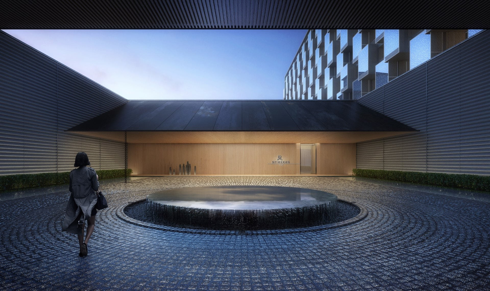
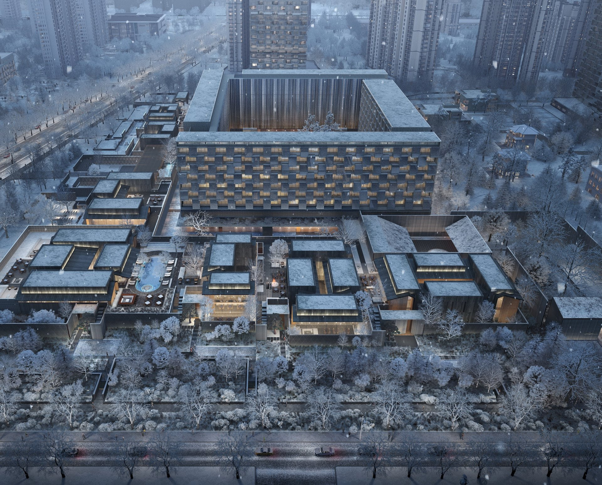
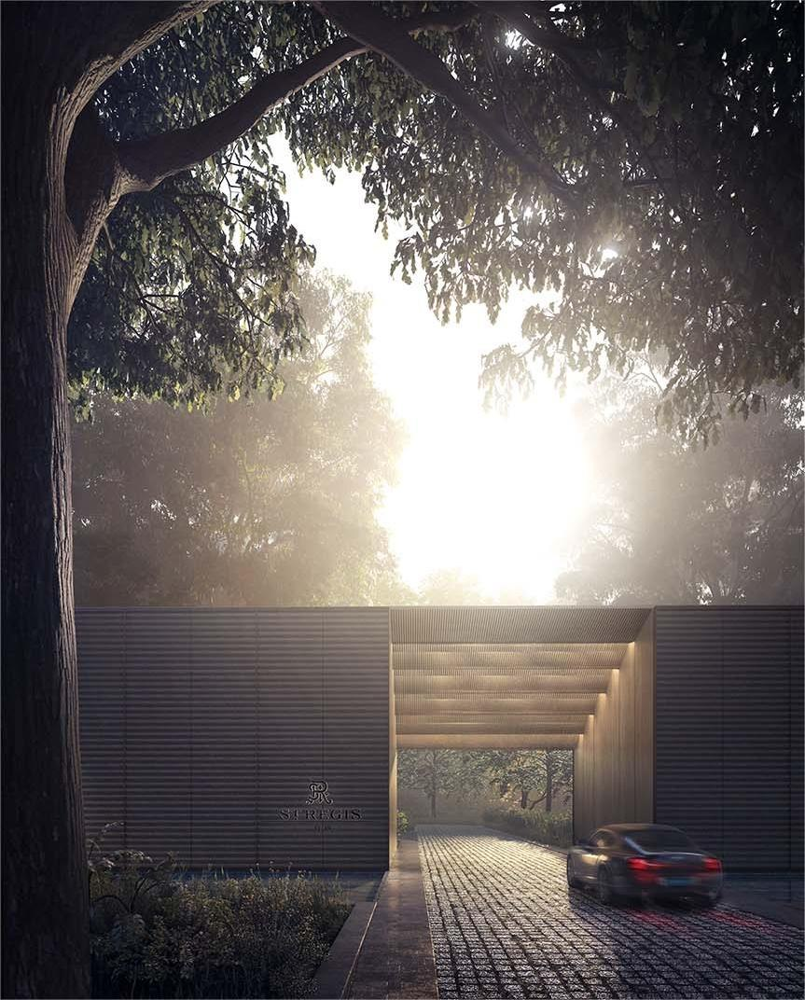
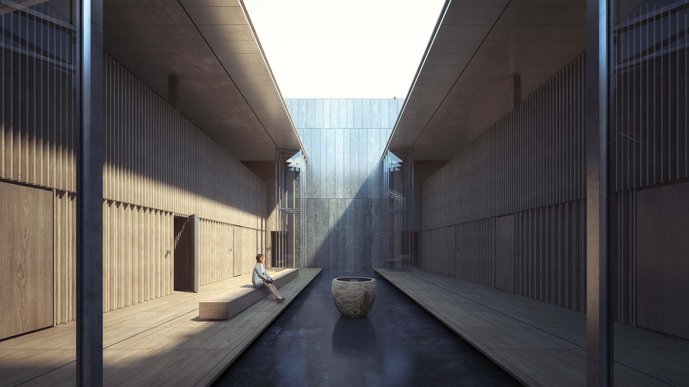
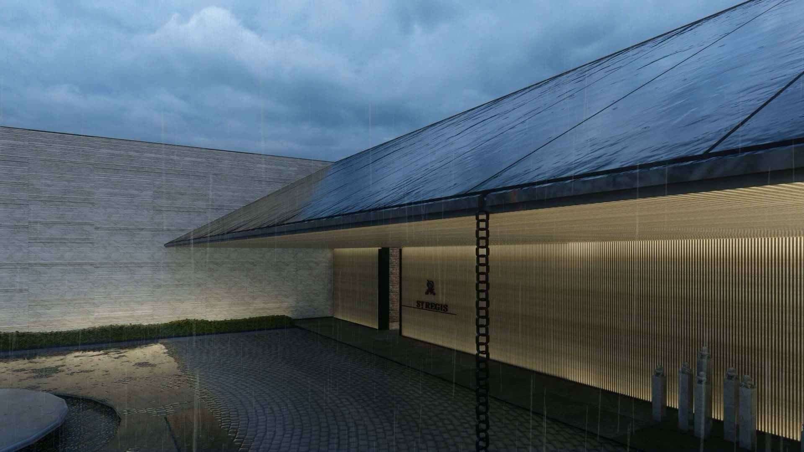
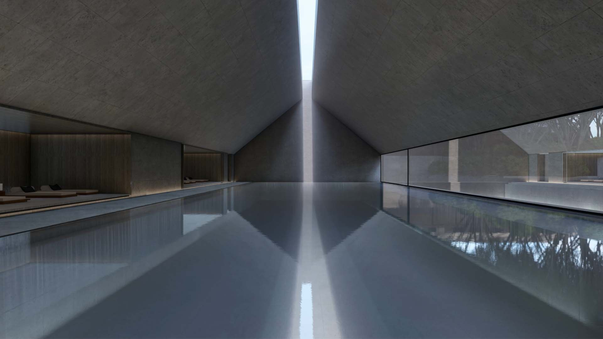
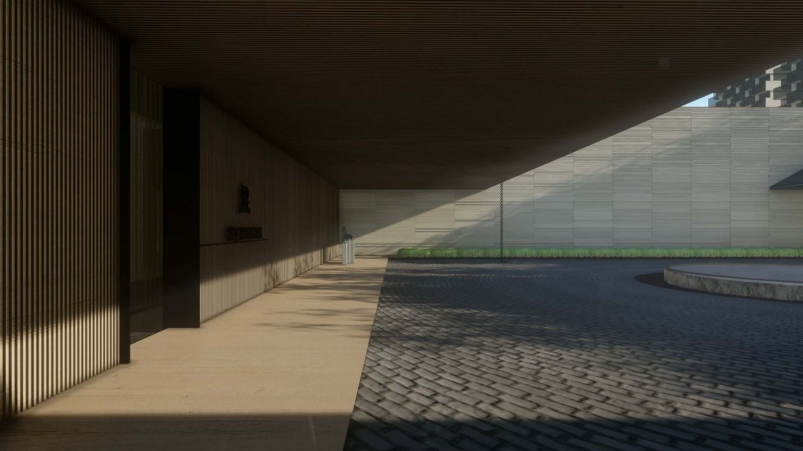
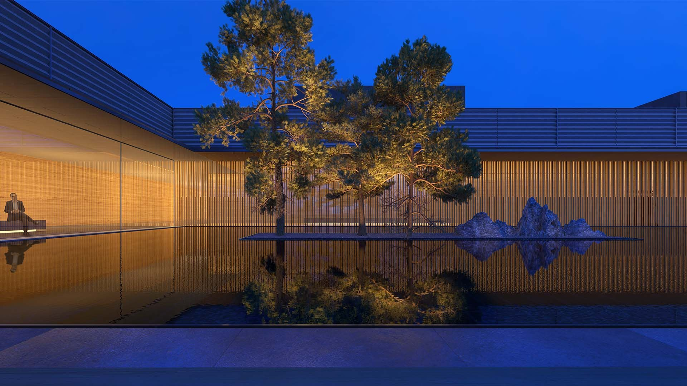
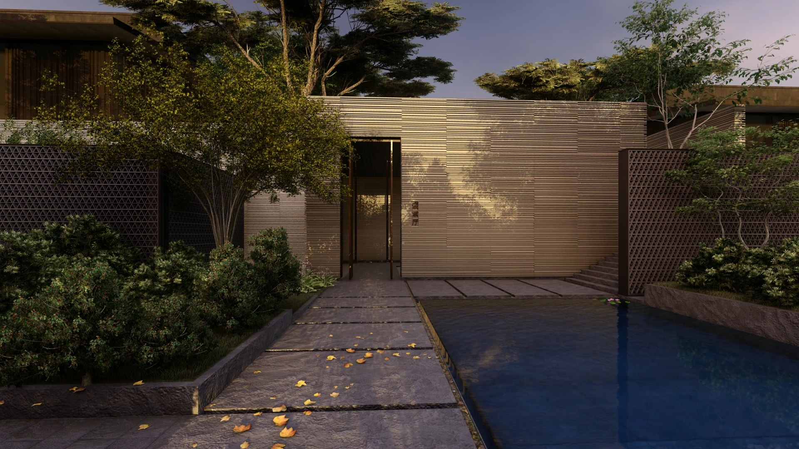

陕西 · 西安
西安瑞吉
H2 项目档案 · 2018
Marriott International
全部作品
01项目介绍
回归瑞吉酒店基因，打造城市社交型酒店。 酒店设计提炼了长安古城高家大院的规划格局，将酒店分为内外宅，外宅为酒店公区，内宅为酒店客房区。设计创新性地将公区外置并设立独立出入口，功能合理的安置并结合庭院及露台等室外空间组合使用，可接待各类重要社交活动，打造对外开放的城市客厅。酒店客房则围合成园，内置安静区，功能安排围绕花园，为客人营造私密休闲的居住环境。 建筑形体规整有序，空间借鉴关中民居空间特点和序列，彰显酒店的在地性。建筑外立面语汇简单有细节，材料方面则大量采用有着地域文化特点的陶土及青铜类材料，进一步加强建筑形式的地域感，同时也体现瑞吉酒店的低调奢华感。
















02资料
- 地点
- 陕西 · 西安
- 源档案年份
- 2018
- 档案酒店集团
- Marriott International
年份沿用原档案标注，并非经核实的竣工年份。源材料可能包含设计阶段图像。正式发布前，应确认现名称、项目状态、具体服务范围和图片署名。